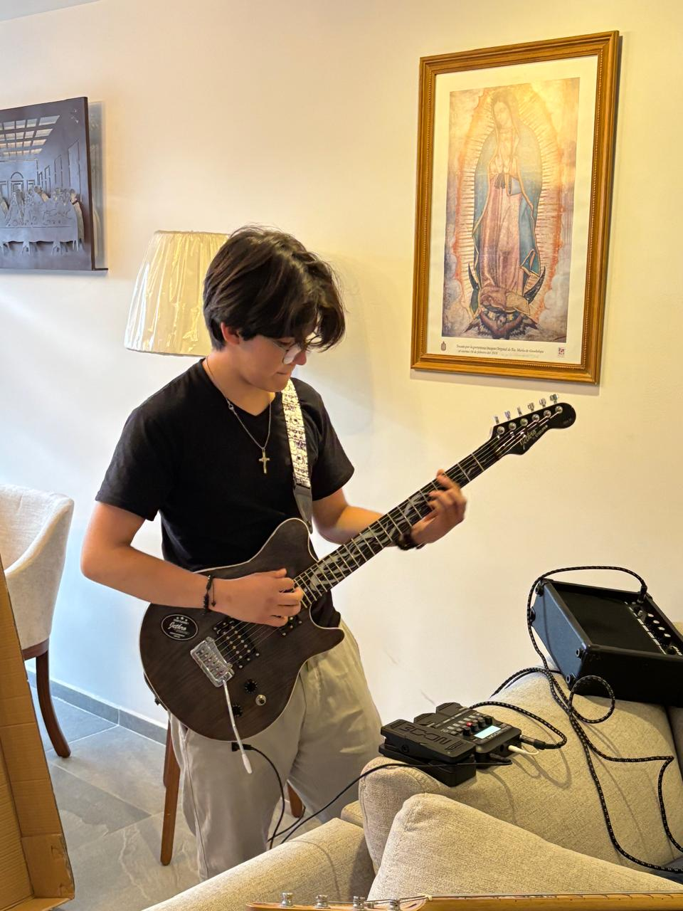
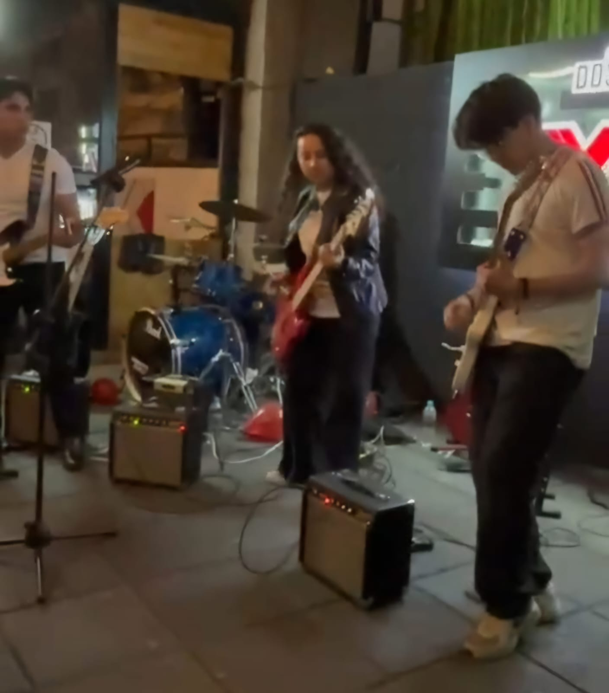
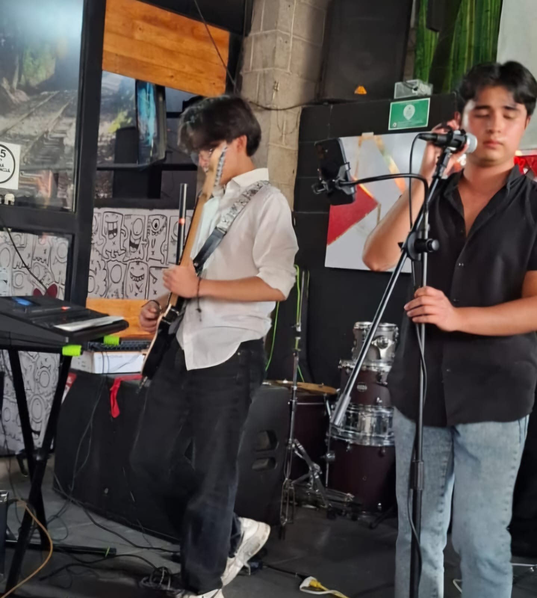
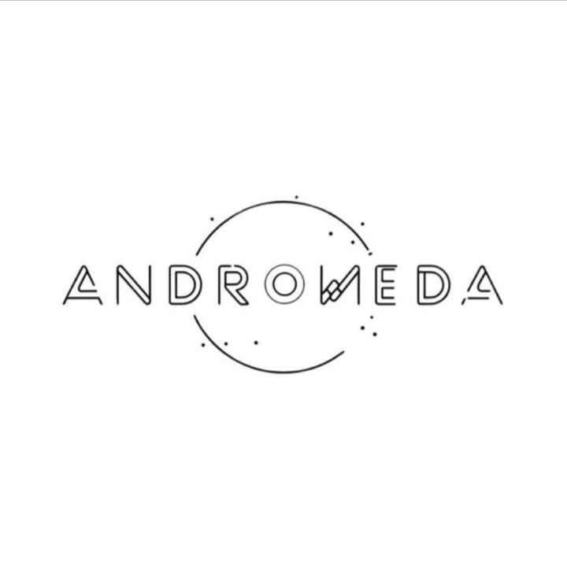

~Christian Arrollo Castañeda~
MÚSICO | GUITARRISTA | PIANISTA | INTERPRETE



info Acerca de mi:
Soy un adolecente que le gusta mucho la musica, y mas que gustarme es mi pasion y es algo que siempre hago con el corazon. Llevo 5 años en el mundo de la musica dominando instrumentos como el piano/guitarra/bajo etc...
location_on México | Puebla
local_phone 55 59 02 11 08
library_music Generos que manejo:
- ●Rock en español
- ●Pop
- ●Ambiental
- ●Lofi
- ●Rock en ingles
- ●Alternativo
Presentaciones
 14/02/25
14/02/25
Festival del amor - Parque del arte | Puebla
12/04/25
Acatzingo - Feria Estatal | Puebla
Agrupación musical

Andromedamore_vert
Andromedaclose
🎤Vocalista: @carlo_leandr
🥁Baterista: @_munoz_492
🎸Bajista: @nabil_lucianoo
🎸Guitarristas: @notcris_a.c_ @gis_merlo